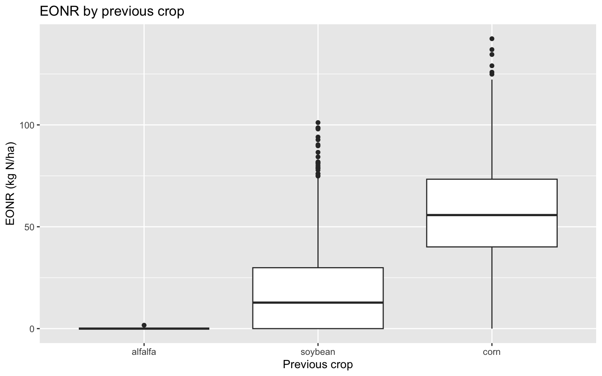
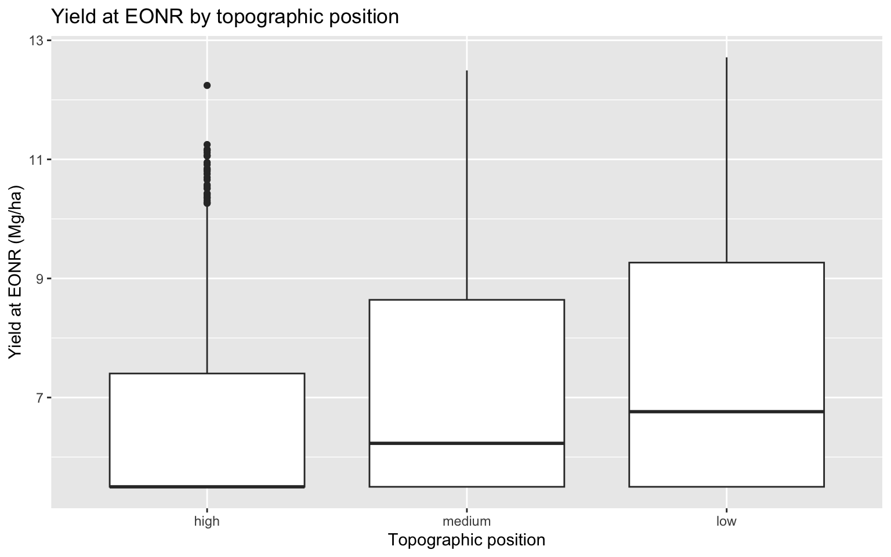
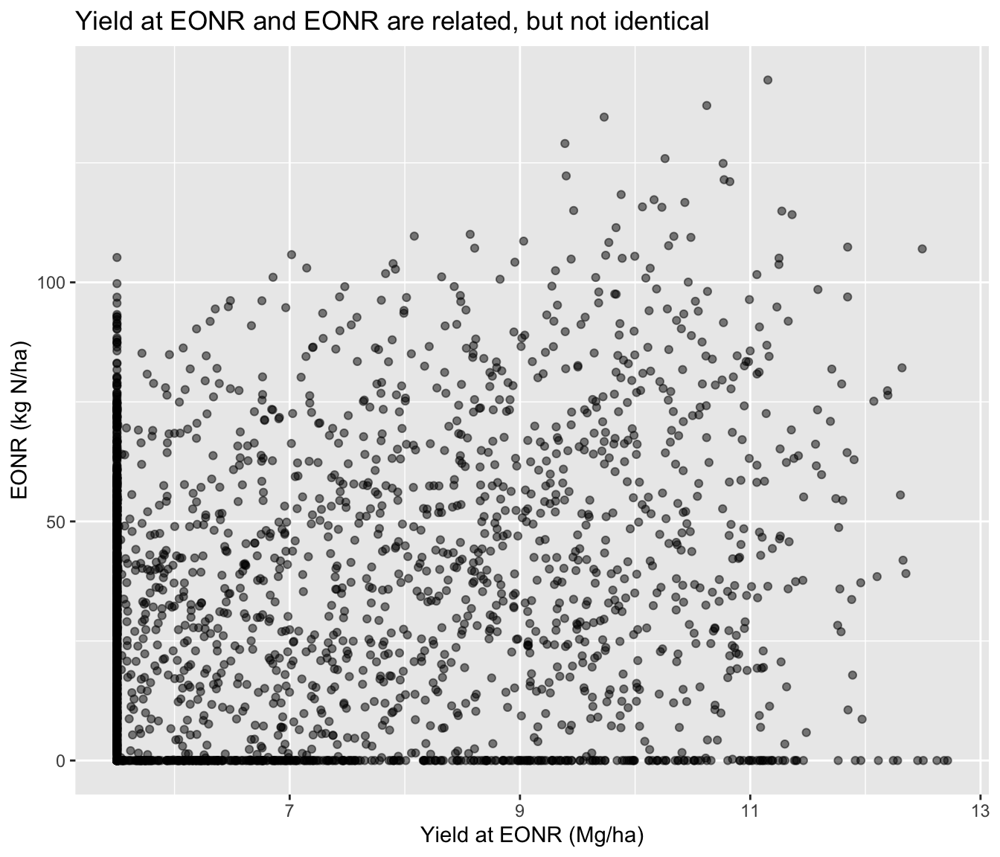
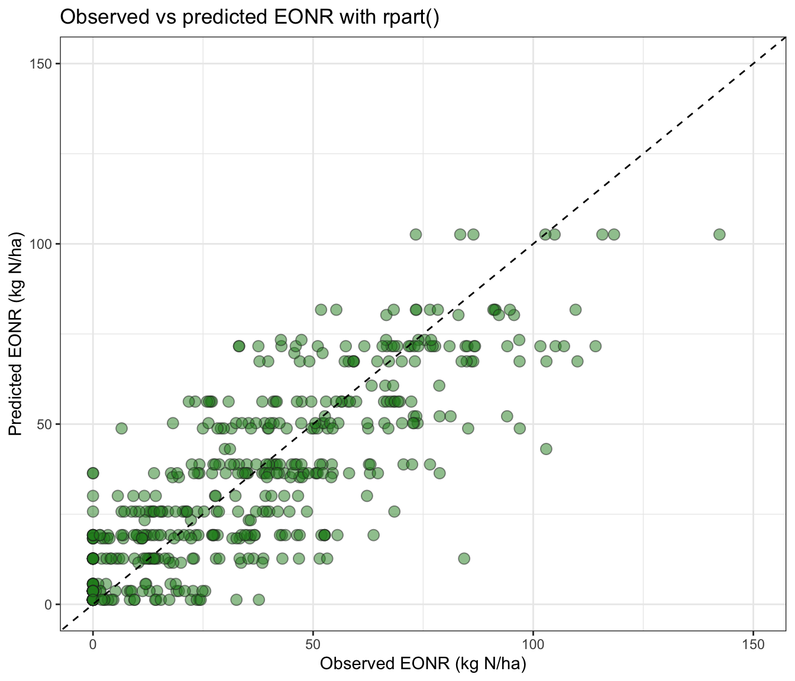
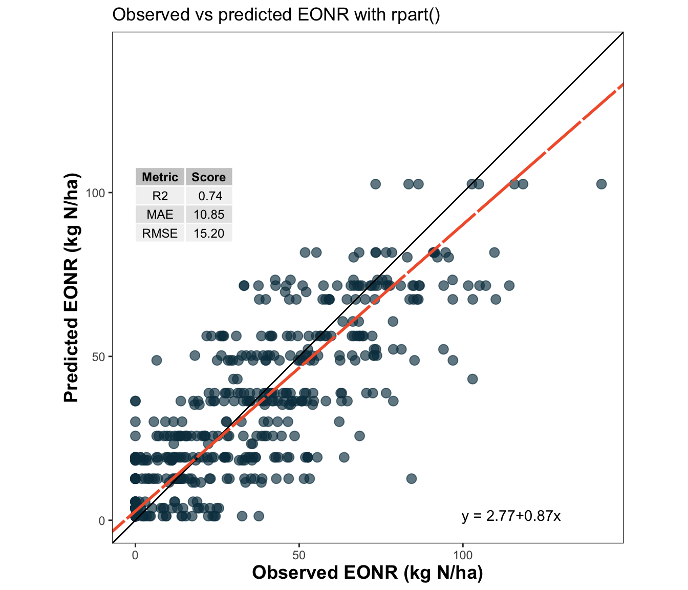

In this lesson, we introduce regression trees for predicting two agronomic responses: EONR and yield at EONR. We use two common R implementations: rpart() and ctree(). Both methods build a tree by recursively splitting the predictor space into more homogeneous groups, but they do not choose splits in exactly the same way, so their final trees can differ.
1 🌳 Overview
In this lesson, we introduce regression trees for predicting two agronomic responses:
yield_eonr_Mg_ha
eonr_kgha
We will use two common R implementations:
rpart() from rpart
ctree() from partykit
Both methods build a tree by recursively splitting the predictor space into more homogeneous groups. However, they do not choose splits in exactly the same way, so their final trees can differ.
🌽 What is the goal here?
A regression tree predicts a continuous response by recursively splitting the data into smaller and more homogeneous groups.
In agronomy, this is useful when responses are driven by:
thresholds
nonlinear responses
interactions among soil, weather, and management
In this lesson, we use trees to predict EONR and yield at EONR.
2 ✅ Learning goals
3 References used in this lesson
For prediction-performance metrics, this lesson uses the metrica package and its regression-metrics vignette.
Correndo, A. A., Moro Rosso, L. H., Ciampitti, I. A., Agostinho de Souza, M. L., & Pearson, J. W. (2022). metrica: an R package to evaluate prediction performance of regression and classification point-forecast models. Journal of Open Source Software, 7(79), 4655. https://doi.org/10.21105/joss.04655
corn_eonr %>%ggplot(aes(x = previous_crop, y = eonr_kgha)) +geom_boxplot() +labs(title ="EONR by previous crop",x ="Previous crop",y ="EONR (kg N/ha)" )

8.2 Yield at EONR by topographic position
Show code
corn_eonr %>%ggplot(aes(x = topo_pos, y = yield_eonr_Mg_ha)) +geom_boxplot() +labs(title ="Yield at EONR by topographic position",x ="Topographic position",y ="Yield at EONR (Mg/ha)" )

8.3 Relationship between the two responses
Show code
corn_eonr %>%ggplot(aes(x = yield_eonr_Mg_ha, y = eonr_kgha)) +geom_point(alpha =0.5, #aes(color = site) ) +labs(title ="Yield at EONR and EONR are related, but not identical",x ="Yield at EONR (Mg/ha)",y ="EONR (kg N/ha)" )

⚠️ A note on the train/test split
Here we use a simple random split because it is easy to understand for a first lesson.
However, this dataset has repeated structure across sites, years, and topographic positions. In real predictive work, grouped resampling by site, year, or site-year may provide a more honest evaluation than a random row-wise split.
9 ✂️ Train/test split
As in most supervised learning workflows, we fit the model on a training set and evaluate its performance on a test set. We will use a 80:20 split, which means using 80% of the data for training and 20% for testing. Remember we have more CV options that may be more appropriate for this dataset (maybe leave one group out or similar), but we will keep it simple for this being first lesson on regression trees.
Show code
set.seed(6530)n <-nrow(corn_eonr)train_id <-sample(seq_len(n), size =round(0.8* n))# Here we take the 80% of the data for training train_df <- corn_eonr[train_id, ] # And here we take the remaining 20% for testingtest_df <- corn_eonr[-train_id, ]dim(train_df)
[1] 2400 24
Show code
dim(test_df)
[1] 600 24
🌳 How does a regression tree work?
A regression tree starts with all observations in a single node.
Then it asks a sequence of binary questions such as:
Is previous_crop alfalfa?
Is spring_nitrate_ppm less than a threshold?
Is water_deficit_mm above a threshold?
Each split tries to create subgroups with more similar response values than the parent group.
10 🌳 Regression trees with rpart()
11 🧪 What does rpart() do?
rpart() grows a regression tree by searching for splits that reduce within-node variability in the response.
For a continuous response, it tries to create child nodes where the response is more homogeneous than in the parent node.
model Metric Score
1 rpart_eonr R2 0.7362053
2 rpart_eonr MAE 10.8485675
3 rpart_eonr RMSE 15.2023901
11.5 📈 Observed vs predicted for rpart()
Show code
# Basic ggplot for observed vs predictedtest_df %>%ggplot(aes(x = eonr_kgha, y = pred_rpart_eonr)) +geom_point(alpha =0.5, shape =21, size =3,fill ="forestgreen", color ="grey15") +geom_abline(intercept =0, slope =1, linetype =2) +scale_x_continuous(limits =c(0, 150), breaks =seq(0,200, by=50)) +scale_y_continuous(limits =c(0, 150), breaks =seq(0,200, by=50)) +labs(title ="Observed vs predicted EONR with rpart()",x ="Observed EONR (kg N/ha)",y ="Predicted EONR (kg N/ha)" )+theme_bw()

Show code
# Use metrica's scatter_plot for a more standardized visualization# You can print metrics on the plot and draw a regression trendlinemetrica::scatter_plot(data = test_df,obs = eonr_kgha,pred = pred_rpart_eonr,print_metrics =TRUE,metrics_list =c("RMSE", "MAE", "R2") )+scale_x_continuous(limits =c(0, 200), breaks =seq(0,200, by=50)) +scale_y_continuous(limits =c(0, 200), breaks =seq(0,200, by=50)) +labs(title ="Observed vs predicted EONR with rpart()",x ="Observed EONR (kg N/ha)",y ="Predicted EONR (kg N/ha)" )

12 ✂️ Tree complexity and pruning in rpart()
A fully grown tree often overfits the training data. One strength of rpart() is that it provides a complexity parameter table that helps us inspect pruning candidates.
model Metric Score
1 rpart_eonr R2 0.7362053
2 rpart_eonr MAE 10.8485675
3 rpart_eonr RMSE 15.2023901
4 rpart_eonr_pruned R2 0.7362053
5 rpart_eonr_pruned MAE 10.8485675
6 rpart_eonr_pruned RMSE 15.2023901
13 🌿 Regression trees with ctree()
14 🧪 What does ctree() do?
ctree() fits a conditional inference tree. Instead of choosing splits through the same impurity-reduction strategy used in rpart(), it relies on a statistical testing framework (typically a p-value) to decide whether a split should be made and which predictor should be selected.
This often leads to trees that look different, more conservative trees compared to rpart(), even when both are fitted to the same response and predictors.
test_df <- test_df %>%mutate(pred_rpart_yield =predict(rpart_yield, newdata = test_df),pred_ctree_yield =predict(ctree_yield, newdata = test_df) )# Merge performance metrics for both models into a single table for comparisonbind_rows( metrica::metrics_summary(data = test_df,obs = yield_eonr_Mg_ha,pred = pred_rpart_yield,type ="regression",metrics =c("RMSE", "MAE", "R2") ) %>%mutate(model ="rpart_yield"), metrica::metrics_summary(data = test_df,obs = yield_eonr_Mg_ha,pred = pred_ctree_yield,type ="regression",metrics =c("RMSE", "MAE", "R2") ) %>%mutate(model ="ctree_yield")) %>%select(model, everything())
model Metric Score
1 rpart_yield R2 0.7574397
2 rpart_yield MAE 0.6242395
3 rpart_yield RMSE 0.9642375
4 ctree_yield R2 0.7574633
5 ctree_yield MAE 0.6243926
6 ctree_yield RMSE 0.9641893
16 📏 About the performance metrics
In this lesson, prediction performance is summarized with RMSE, MAE, and R2 using the metrica package.
These metrics are described in the package vignette on available regression metrics. That reference is useful because it explains not only the formulas, but also the practical interpretation of each metric when comparing predictive models.
17 🔍 Interpreting regression trees
A regression tree is not just a predictive tool. It is also a way to summarize how the algorithm partitions the data.
When reading a tree, ask:
Which predictor appears first?
Are the first splits agronomically sensible?
Do some splits reflect thresholds?
Are the terminal nodes easy to explain?
Does the tree reveal interactions that a linear model would need to specify explicitly?
For example, a split on previous_crop followed by spring_nitrate_ppm would make agronomic sense for EONR because those variables are directly related to N supply.
Likewise, a split on water_deficit_mm or whc_mm would make sense for yield because those variables affect crop water availability.
18 ⚖️ Strengths and limitations of a single tree
18.1 Strengths
Easy to visualize
Handles nonlinear relationships naturally
Captures interactions automatically
Works with mixed predictor types
Produces rules that are often intuitive
18.2 Limitations
A single tree is usually unstable
Small changes in the data can change the tree structure
Prediction accuracy is often lower than ensemble methods
Trees can overfit if not constrained or pruned
Variable importance from one tree should not be overinterpreted as causality
19 ✅ Final remarks
Single regression trees are a good starting point for machine learning because they are easy to interpret. They help us see how recursive partitioning works before moving to more powerful ensemble methods such as random forests or boosting.
In practice, a single tree is often more useful for interpretation than for maximum predictive performance.
20 📝 Exercises
Fit a shallower rpart() tree by reducing maxdepth to 3. What changes?
Increase minsplit from 30 to 80. Does the tree become easier to interpret?
Compare trees fitted with and without previous_crop.
Compare trees fitted with and without spring_nitrate_ppm.
Which response seems easier to predict: yield_eonr_Mg_ha or eonr_kgha?
Which method gave the better test-set performance in your run: rpart() or ctree()?
Source Code
---title: "Regression Trees in R"author: "Dr. Adrian Correndo"date: "2026-03-25"abstract: "In this lesson, we introduce regression trees for predicting two agronomic responses: EONR and yield at EONR. We use two common R implementations: `rpart()` and `ctree()`. Both methods build a tree by recursively splitting the predictor space into more homogeneous groups, but they do not choose splits in exactly the same way, so their final trees can differ."format: html: toc: true toc-location: left toc-depth: 3 number-sections: true code-fold: true code-summary: "Show code" code-tools: trueexecute: echo: true warning: false message: falseeditor: source---# 🌳 OverviewIn this lesson, we introduce **regression trees** for predicting two agronomic responses:- `yield_eonr_Mg_ha`- `eonr_kgha`We will use two common R implementations:- `rpart()` from **rpart**- `ctree()` from **partykit**Both methods build a tree by recursively splitting the predictor space into more homogeneous groups. However, they do not choose splits in exactly the same way, so their final trees can differ.::: callout-note## 🌽 What is the goal here?A regression tree predicts a continuous response by **recursively splitting** the data into smaller and more homogeneous groups.In agronomy, this is useful when responses are driven by:- thresholds- nonlinear responses- interactions among soil, weather, and managementIn this lesson, we use trees to predict **EONR** and **yield at EONR**.:::# ✅ Learning goals# References used in this lessonFor prediction-performance metrics, this lesson uses the **metrica** package and its regression-metrics vignette.- Correndo, A. A., Moro Rosso, L. H., Ciampitti, I. A., Agostinho de Souza, M. L., & Pearson, J. W. (2022). *metrica: an R package to evaluate prediction performance of regression and classification point-forecast models*. *Journal of Open Source Software, 7*(79), 4655. https://doi.org/10.21105/joss.04655- Metrica vignette on available regression metrics: <https://adriancorrendo.github.io/metrica/articles/available_metrics_regression.html># Learning goalsBy the end of this lesson, you should be able to:1. Explain what a regression tree is.2. Fit a regression tree in R with `rpart()`.3. Fit a regression tree in R with `ctree()`.4. Interpret the tree structure agronomically.5. Compare predictions from tree models using a test set.6. Recognize the main strengths and limitations of a single regression tree.# 📦 Load packages```{r packages}library(pacman)p_load( dplyr, # data manipulation ggplot2, # data visualization tidyr, # data tidying forcats, # categorical variable manipulation metrica, # prediction performance metrics rpart, # regression trees rpart.plot, # tree plotting for rpart partykit # conditional regression trees)```# 🌽 Load or generate the datasetThis lesson assumes you already created the synthetic dataset `corn_eonr`.If it is not in your environment, source the script that generates it.```{r load-data}source("synthetic_corn_eonr_dataset.R")glimpse(corn_eonr)```# 🗂️ The dataEach row represents one combination of:- site- year- topographic positionThe current crop is always corn, but previous crop varies among:- alfalfa- soybean- cornWe will use the following predictors:```{r predictors}predictor_names <- c( "topo_pos", "previous_crop", "soil_texture", "soil_depth_cm", "whc_mm", "om_pct", "ph", "drainage_class", "slope_pct", "planting_doy", "spring_rain_mm", "summer_rain_mm", "gdd", "heat_stress_days", "water_deficit_mm", "excess_water_index", "spring_nitrate_ppm", "n_mineralization_index", "n_loss_risk_index")corn_eonr %>% select(all_of(c(predictor_names, "yield_eonr_Mg_ha", "eonr_kgha"))) %>% glimpse()```# 🔎 Quick exploratory plots## EONR by previous crop```{r eonr-prev-crop, fig.width=8, fig.height=5}corn_eonr %>% ggplot(aes(x = previous_crop, y = eonr_kgha)) + geom_boxplot() + labs( title = "EONR by previous crop", x = "Previous crop", y = "EONR (kg N/ha)" )```## Yield at EONR by topographic position```{r yield-topo, fig.width=8, fig.height=5}corn_eonr %>% ggplot(aes(x = topo_pos, y = yield_eonr_Mg_ha)) + geom_boxplot() + labs( title = "Yield at EONR by topographic position", x = "Topographic position", y = "Yield at EONR (Mg/ha)" )```## Relationship between the two responses```{r yield-eonr-scatter, fig.width=7, fig.height=6}corn_eonr %>% ggplot(aes(x = yield_eonr_Mg_ha, y = eonr_kgha)) + geom_point(alpha = 0.5, #aes(color = site) ) + labs( title = "Yield at EONR and EONR are related, but not identical", x = "Yield at EONR (Mg/ha)", y = "EONR (kg N/ha)" )```::: callout-warning## ⚠️ A note on the train/test splitHere we use a simple random split because it is easy to understand for a first lesson.However, this dataset has repeated structure across **sites**, **years**, and **topographic positions**. In real predictive work, grouped resampling by site, year, or site-year may provide a more honest evaluation than a random row-wise split.:::# ✂️ Train/test splitAs in most supervised learning workflows, we fit the model on a **training set** and evaluate its performance on a **test set**. We will use a 80:20 split, which means using 80% of the data for training and 20% for testing. Remember we have more CV options that may be more appropriate for this dataset (maybe leave one group out or similar), but we will keep it simple for this being first lesson on regression trees.```{r split-data}set.seed(6530)n <- nrow(corn_eonr)train_id <- sample(seq_len(n), size = round(0.8 * n))# Here we take the 80% of the data for training train_df <- corn_eonr[train_id, ] # And here we take the remaining 20% for testingtest_df <- corn_eonr[-train_id, ]dim(train_df)dim(test_df)```::: callout-tip## 🌳 How does a regression tree work?A regression tree starts with all observations in a single node.Then it asks a sequence of binary questions such as:- Is `previous_crop` alfalfa?- Is `spring_nitrate_ppm` less than a threshold?- Is `water_deficit_mm` above a threshold?Each split tries to create subgroups with more similar response values than the parent group.:::# 🌳 Regression trees with `rpart()`# 🧪 What does `rpart()` do?`rpart()` grows a regression tree by searching for splits that reduce within-node variability in the response.For a continuous response, it tries to create child nodes where the response is more homogeneous than in the parent node.## 🌽 Model for EONR```{r rpart-eonr-fit}rpart_eonr <- rpart( formula = eonr_kgha ~ topo_pos + previous_crop + soil_texture + soil_depth_cm + whc_mm + om_pct + ph + drainage_class + slope_pct + planting_doy + spring_rain_mm + summer_rain_mm + gdd + heat_stress_days + water_deficit_mm + excess_water_index + spring_nitrate_ppm + n_mineralization_index + n_loss_risk_index, data = train_df, method = "anova", control = rpart.control( cp = 0.001, minsplit = 30, maxdepth = 5 ))rpart_eonr```## 🌳 Plot the `rpart()` tree```{r rpart-eonr-plot, fig.width=11, fig.height=7}rpart.plot( rpart_eonr, type = 2, extra = 101, fallen.leaves = TRUE, tweak = 1.0, box.palette = "RdYlGn",)```## 🔍 Variable importance from `rpart()````{r rpart-eonr-importance}rpart_eonr$variable.importance %>% sort(decreasing = TRUE) %>% as.data.frame()```## 📉 Predictions and performance on the test set```{r rpart-eonr-test}test_df <- test_df %>% mutate(pred_rpart_eonr = predict(rpart_eonr, newdata = test_df))# Using metrica for prediction metricsmetrica::metrics_summary( data = test_df, obs = eonr_kgha, pred = pred_rpart_eonr, type = "regression", metrics = c("RMSE", "MAE", "R2")) %>% mutate(model = "rpart_eonr") %>% select(model, everything())```## 📈 Observed vs predicted for `rpart()````{r rpart-eonr-obs-pred, fig.width=7, fig.height=6}# Basic ggplot for observed vs predictedtest_df %>% ggplot(aes(x = eonr_kgha, y = pred_rpart_eonr)) + geom_point(alpha = 0.5, shape = 21, size = 3, fill = "forestgreen", color = "grey15") + geom_abline(intercept = 0, slope = 1, linetype = 2) + scale_x_continuous(limits = c(0, 150), breaks = seq(0,200, by=50)) + scale_y_continuous(limits = c(0, 150), breaks = seq(0,200, by=50)) + labs( title = "Observed vs predicted EONR with rpart()", x = "Observed EONR (kg N/ha)", y = "Predicted EONR (kg N/ha)" )+ theme_bw()# Use metrica's scatter_plot for a more standardized visualization# You can print metrics on the plot and draw a regression trendlinemetrica::scatter_plot(data = test_df, obs = eonr_kgha, pred = pred_rpart_eonr, print_metrics = TRUE, metrics_list = c("RMSE", "MAE", "R2") )+ scale_x_continuous(limits = c(0, 200), breaks = seq(0,200, by=50)) + scale_y_continuous(limits = c(0, 200), breaks = seq(0,200, by=50)) + labs(title = "Observed vs predicted EONR with rpart()", x = "Observed EONR (kg N/ha)", y = "Predicted EONR (kg N/ha)" )```# ✂️ Tree complexity and pruning in `rpart()`A fully grown tree often overfits the training data. One strength of `rpart()` is that it provides a **complexity parameter table** that helps us inspect pruning candidates.```{r rpart-cptable}printcp(rpart_eonr)plotcp(rpart_eonr)```A common strategy is to prune the tree using a larger `cp` value chosen from the complexity table.```{r rpart-pruned}cp_best <- rpart_eonr$cptable[which.min(rpart_eonr$cptable[, "xerror"]), "CP"]rpart_eonr_pruned <- prune(rpart_eonr, cp = cp_best)rpart.plot( rpart_eonr_pruned, type = 2, extra = 101, fallen.leaves = TRUE, tweak = 1.0, box.palette = "RdYlGn",)``````{r rpart-pruned-test}test_df <- test_df %>% mutate(pred_rpart_eonr_pruned = predict(rpart_eonr_pruned, newdata = test_df))bind_rows( metrica::metrics_summary( data = test_df, obs = eonr_kgha, pred = pred_rpart_eonr, type = "regression", metrics = c("RMSE", "MAE", "R2") ) %>% mutate(model = "rpart_eonr"), metrica::metrics_summary( data = test_df, obs = eonr_kgha, pred = pred_rpart_eonr_pruned, type = "regression", metrics = c("RMSE", "MAE", "R2") ) %>% mutate(model = "rpart_eonr_pruned")) %>% select(model, everything())```# 🌿 Regression trees with `ctree()`# 🧪 What does `ctree()` do?`ctree()` fits a **conditional inference tree**. Instead of choosing splits through the same impurity-reduction strategy used in `rpart()`, it relies on a statistical testing framework (typically a p-value) to decide whether a split should be made and which predictor should be selected.This often leads to trees that look different, more conservative trees compared to `rpart()`, even when both are fitted to the same response and predictors.## Model for EONR```{r ctree-eonr-fit}ctree_eonr <- ctree( eonr_kgha ~ topo_pos + previous_crop + soil_texture + soil_depth_cm + whc_mm + om_pct + ph + drainage_class + slope_pct + planting_doy + spring_rain_mm + summer_rain_mm + gdd + heat_stress_days + water_deficit_mm + excess_water_index + spring_nitrate_ppm + n_mineralization_index + n_loss_risk_index, data = train_df, control = ctree_control( minsplit = 30, maxdepth = 3 ))ctree_eonr```## 🌿 Plot the `ctree()` tree```{r ctree-eonr-plot, fig.width=11, fig.height=8}plot(ctree_eonr)```## Predictions and performance on the test set```{r ctree-eonr-test}test_df <- test_df %>% mutate(pred_ctree_eonr = predict(ctree_eonr, newdata = test_df))bind_rows( metrica::metrics_summary( data = test_df, obs = eonr_kgha, pred = pred_rpart_eonr, type = "regression", metrics = c("RMSE", "MAE", "R2") ) %>% mutate(model = "rpart_eonr"), metrica::metrics_summary( data = test_df, obs = eonr_kgha, pred = pred_rpart_eonr_pruned, type = "regression", metrics = c("RMSE", "MAE", "R2") ) %>% mutate(model = "rpart_eonr_pruned"), metrica::metrics_summary( data = test_df, obs = eonr_kgha, pred = pred_ctree_eonr, type = "regression", metrics = c("RMSE", "MAE", "R2") ) %>% mutate(model = "ctree_eonr")) %>% select(model, everything())```## Observed vs predicted for `ctree()````{r ctree-eonr-obs-pred, fig.width=7, fig.height=6}test_df %>% ggplot(aes(x = eonr_kgha, y = pred_ctree_eonr)) + geom_point(alpha = 0.5, shape = 21, size = 3, fill = "orange", color = "grey15") + geom_abline(intercept = 0, slope = 1, linetype = 2) + scale_x_continuous(limits = c(0, 150), breaks = seq(0,200, by=50)) + scale_y_continuous(limits = c(0, 150), breaks = seq(0,200, by=50)) + labs( title = "Observed vs predicted EONR with ctree()", x = "Observed EONR (kg N/ha)", y = "Predicted EONR (kg N/ha)" )+ theme_bw()# Use metrica's scatter_plot for a more standardized visualizationmetrica::scatter_plot(data = test_df, obs = eonr_kgha, pred = pred_ctree_eonr, print_metrics = TRUE, metrics_list = c("RMSE", "MAE", "R2") )+ labs(title = "Observed vs predicted EONR with ctree()", x = "Observed EONR (kg N/ha)", y = "Predicted EONR (kg N/ha)" )```# 🌽 Fit a second tree for yield at EONRNow we repeat the process for a second continuous response.## `rpart()` for yield at EONR```{r rpart-yield-fit}rpart_yield <- rpart( yield_eonr_Mg_ha ~ topo_pos + previous_crop + soil_texture + soil_depth_cm + whc_mm + om_pct + ph + drainage_class + slope_pct + planting_doy + spring_rain_mm + summer_rain_mm + gdd + heat_stress_days + water_deficit_mm + excess_water_index + spring_nitrate_ppm + n_mineralization_index + n_loss_risk_index, data = train_df, method = "anova", control = rpart.control( cp = 0.002, minsplit = 30, maxdepth = 3 ))# Plot rpart for EONRrpart.plot( rpart_yield, type = 2, extra = 101, fallen.leaves = TRUE, tweak = 1.0, box.palette = "RdYlGn",)```## `ctree()` for yield at EONR```{r ctree-yield-fit, fig.width=11, fig.height=8}ctree_yield <- ctree( yield_eonr_Mg_ha ~ topo_pos + previous_crop + soil_texture + soil_depth_cm + whc_mm + om_pct + ph + drainage_class + slope_pct + planting_doy + spring_rain_mm + summer_rain_mm + gdd + heat_stress_days + water_deficit_mm + excess_water_index + spring_nitrate_ppm + n_mineralization_index + n_loss_risk_index, data = train_df, control = ctree_control( minsplit = 30, maxdepth = 3 ))plot(ctree_yield)```## Test-set comparison for yield at EONR```{r yield-performance}test_df <- test_df %>% mutate( pred_rpart_yield = predict(rpart_yield, newdata = test_df), pred_ctree_yield = predict(ctree_yield, newdata = test_df) )# Merge performance metrics for both models into a single table for comparisonbind_rows( metrica::metrics_summary( data = test_df, obs = yield_eonr_Mg_ha, pred = pred_rpart_yield, type = "regression", metrics = c("RMSE", "MAE", "R2") ) %>% mutate(model = "rpart_yield"), metrica::metrics_summary( data = test_df, obs = yield_eonr_Mg_ha, pred = pred_ctree_yield, type = "regression", metrics = c("RMSE", "MAE", "R2") ) %>% mutate(model = "ctree_yield")) %>% select(model, everything())```# 📏 About the performance metricsIn this lesson, prediction performance is summarized with **RMSE**, **MAE**, and **R2** using the **metrica** package.These metrics are described in the package vignette on available regression metrics. That reference is useful because it explains not only the formulas, but also the practical interpretation of each metric when comparing predictive models.# 🔍 Interpreting regression treesA regression tree is not just a predictive tool. It is also a way to summarize how the algorithm partitions the data.When reading a tree, ask:1. Which predictor appears first?2. Are the first splits agronomically sensible?3. Do some splits reflect thresholds?4. Are the terminal nodes easy to explain?5. Does the tree reveal interactions that a linear model would need to specify explicitly?For example, a split on `previous_crop` followed by `spring_nitrate_ppm` would make agronomic sense for EONR because those variables are directly related to N supply.Likewise, a split on `water_deficit_mm` or `whc_mm` would make sense for yield because those variables affect crop water availability.# ⚖️ Strengths and limitations of a single tree## Strengths- Easy to visualize- Handles nonlinear relationships naturally- Captures interactions automatically- Works with mixed predictor types- Produces rules that are often intuitive## Limitations- A single tree is usually unstable- Small changes in the data can change the tree structure- Prediction accuracy is often lower than ensemble methods- Trees can overfit if not constrained or pruned- Variable importance from one tree should not be overinterpreted as causality# ✅ Final remarksSingle regression trees are a good starting point for machine learning because they are easy to interpret. They help us see how recursive partitioning works before moving to more powerful ensemble methods such as random forests or boosting.In practice, a single tree is often more useful for **interpretation** than for maximum predictive performance.# 📝 Exercises1. Fit a shallower `rpart()` tree by reducing `maxdepth` to 3. What changes?2. Increase `minsplit` from 30 to 80. Does the tree become easier to interpret?3. Compare trees fitted with and without `previous_crop`.4. Compare trees fitted with and without `spring_nitrate_ppm`.5. Which response seems easier to predict: `yield_eonr_Mg_ha` or `eonr_kgha`?6. Which method gave the better test-set performance in your run: `rpart()` or `ctree()`?